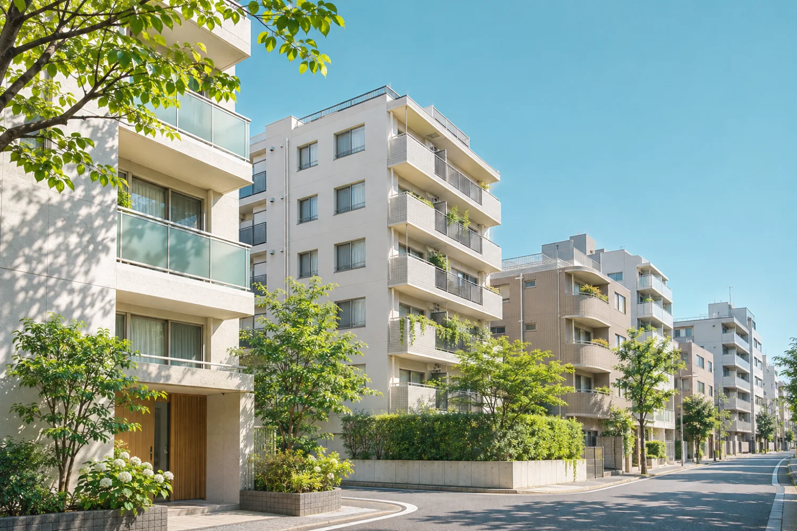
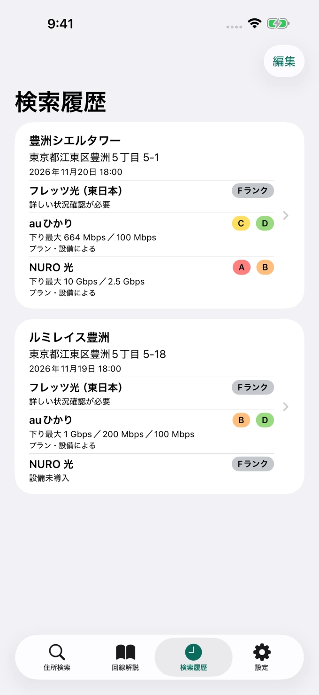
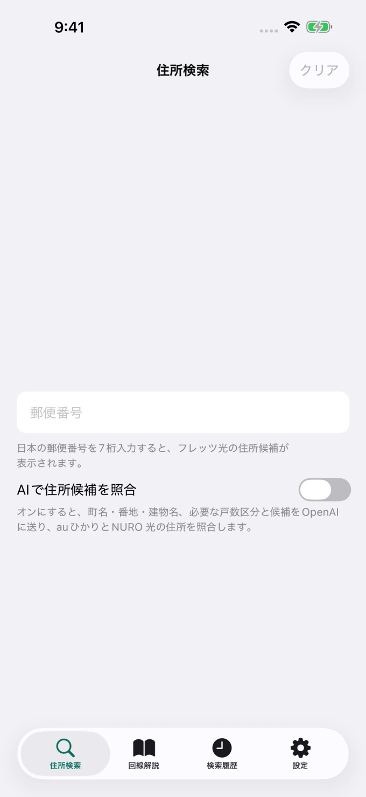

対応する光回線フレッツ光auひかりNURO 光
物件選びに役立つ
3つの画面

よくある質問
どの住所を検索できますか？
日本国内の住所が対象です。フレッツ光は東日本・西日本を住所から切り替えます。物件によって部屋番号などの追加入力が必要です。
表示される速度は実測値ですか？
各社のプランに記載された下り・上りの最大速度です。実際の速度は建物の配線、端末、利用時間帯などで変わります。
設備未導入と表示されたら？
その回線業者が建物に設備を導入していないという判定です。他の業者の結果も確認できます。住戸で契約できるプランや工事の可否は各社にお問い合わせください。